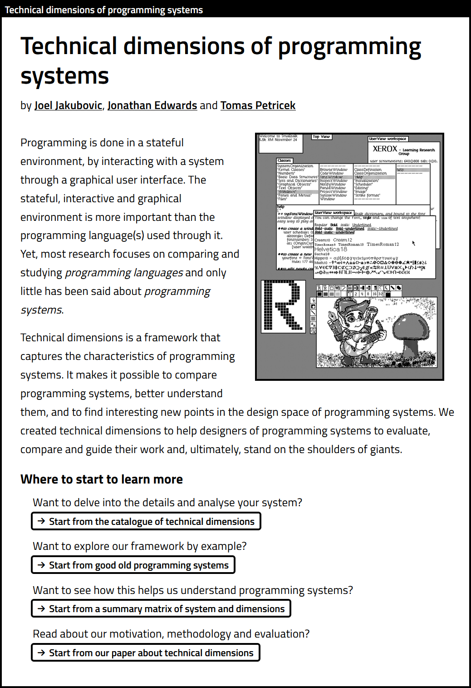
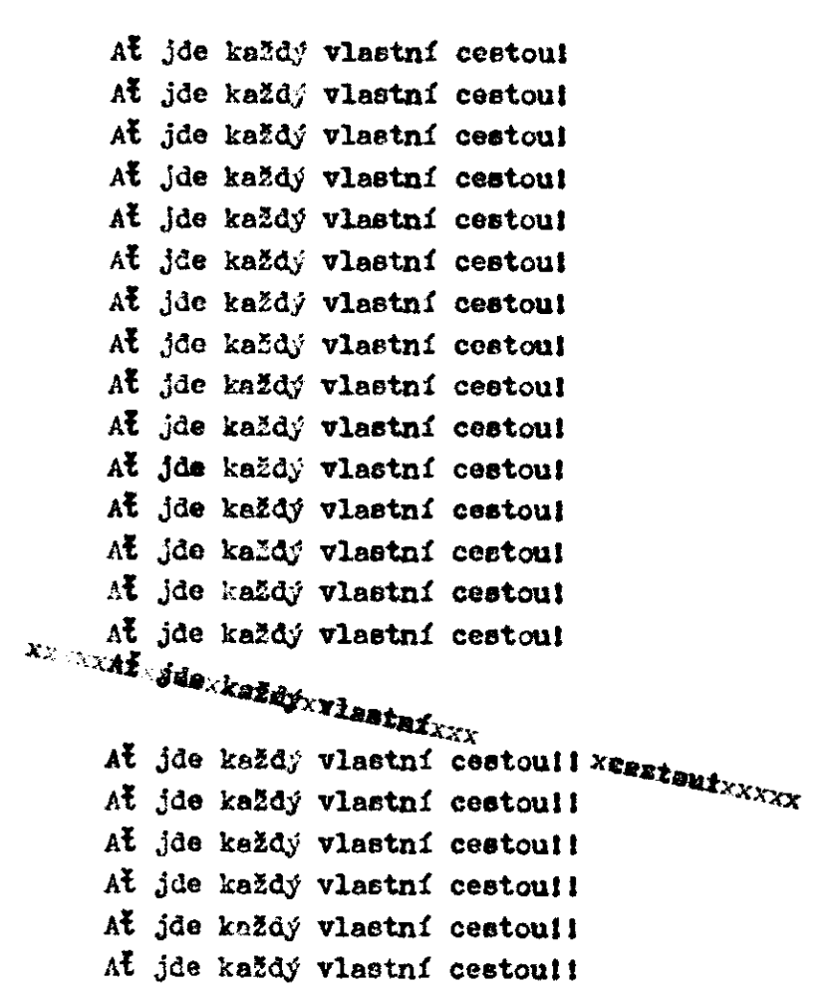
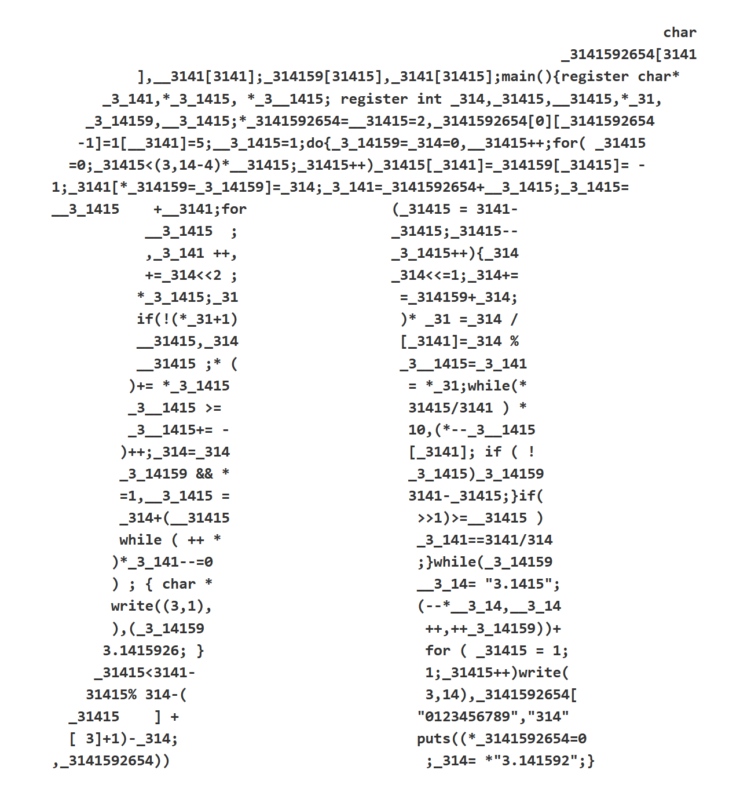
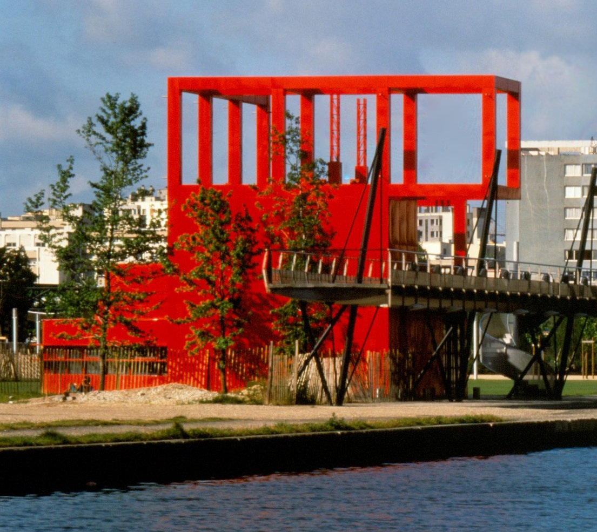
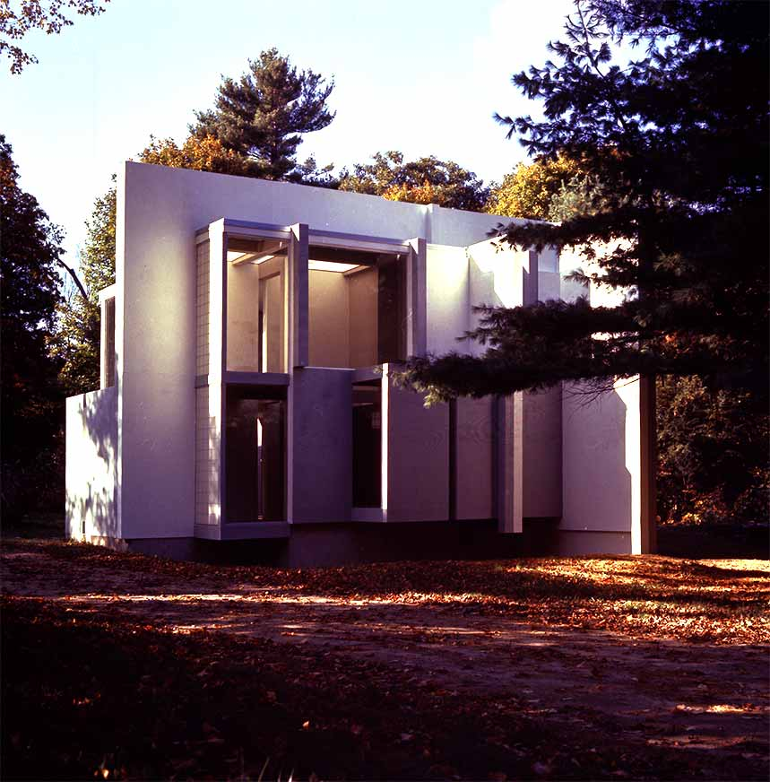
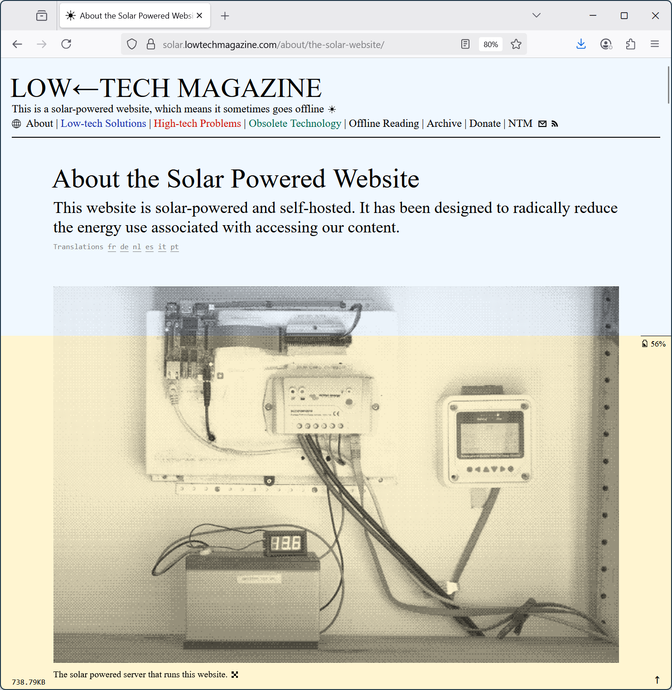
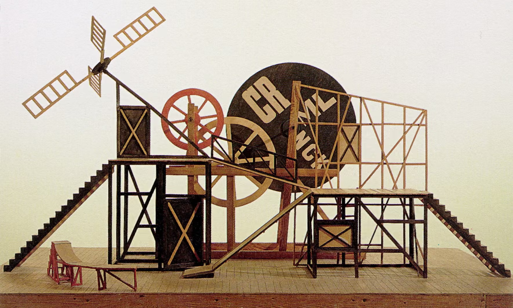
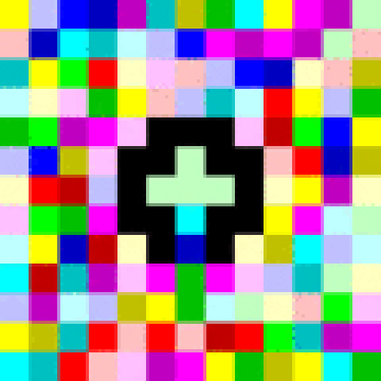

Critical
Architecture/Software
Theory
Tomas Petricek, Charles University, Prague

Good talk topics?
Good talk topics?
Programming systems research and vision?
Upcoming book on the history of programming?


Not so good
talk topics?
Some books
I've read recently
Thoughts on how this relates to software
Thanks for the invitation to PPIG!
Meaning
Meaning in architecture

Brutalist architecture?
Bad example for the purpose of my talk...
No bad feelings!
Focus on function,
not conveying meaning

Dancing House by Gehry & Milunić
aka Fred & Ginger
90s deconstructivism
End of the era of communist panel housing estates
Meaning is there,
if uncomplicated
Column
From structure to message
From function to style
Parthenon (5th cent. BC)
Classical Doric order
Villa Savoye (1931)
Le Corbusier's modernism

U.S. National Archives
Unironical reference to classical past
Emphasise tradition
c.f. Executive Order
on Promoting Beautiful Federal Civic Architecture
Gehry's Loyola Law School (LA)
"... saw classicising typology suitable for the study of law."
More literal but also more critical use
Fits the context!
Double coding
Mechanism for critical architecture
Haunted House - Fondazione Prada
Makeover of an old industrial site into a gallery.
Ironical remark on how the fashion industry works?
"Koolhaas’s very corporate clients (...) regard his chic criticism of a bored elite as just another bit of fun."
Double coding

Form and function
- Form of a modern art gallery
- New spatial typology for art
- Still, many aspects undetermined!
Epistemic freedom
- Modernist "form follows function"
- Aesthetics and ornament!
- Use it for ironical remark?
- Form without any external references?

Anticodes
Václav Havel
"Let everyone go
their own way"
Critical reflection
Double coding
as a mechanism

Double coding in code poetry
water.c (demo)
Read and executed
by the computer
Read and interpreted by the human

Obfuscated C Code Contest (1989)
What does this
snippet print?
Double coding for
light-hearted irony
Can it be used
more seriously?
Undetermined
What is undetermined in software
- Variable names, syntax, comments
- Representation and data structures
- User interface / mode of interaction
- Aspects of software architecture
Criticism
Destabilizing meaning

Parc de La Villette
Deconstructive architecture
- Give up on the dream of pure form
- Challenge values and methods
- Reveal what is normally hidden
Disrupting forms and practices
- Design as layering of structures
- Folies are distortions of a cube
- Form follows formulas!

Parc de La Villette
The superimposition of the three systems (points, lines, surfaces) creates the park as it generates a series of calculated tensions which reinforce the dynamism of the place. Each of the three systems displays its own logic and independence.
Folies
Deconstruction
of the cube form
[The folies] destabilize meaning (...). They put in question, dislocate, destabilise or deconstruct the edifice of this configuration.
House VI
Peter Eisenman
- PhD on the formal basis of architecture (grammar!)
- Formalism, without function
Houses series
- Autonomous architecture
- Structure does not follow function
- Shapes only refer to other shapes
Disrupting domestic mindlessness
My work attacks the concept of occupation as given. (...)
[And] the holes in the floor in the room attack the notion of how you occupy and how you step across the living room?
The occupiers adopt a new choreography of living
Eisenman Alexander debate
Alexander: The thing that strikes me about your friend’s building (...) is that somehow in some intentional way it is not harmonious. [He] intentionally wants to produce an effect of disharmony. (...)
Eisenman: That is correct.
Alexander: I find that incomprehensible. I find it very irresponsible. I find it nutty.
I feel sorry for the man. I also feel incredibly angry because he is fucking up the world.
(...)
Eisenman: I am not preaching disharmony. I am suggesting that disharmony might be part of the cosmology that we exist in. (...) An architecture that puts its head in the sand [does not deal] with the present anxiety.
Disharmony
Disrupting software mindlessness
- Architects use the language of architecture
- Can we use software critically?
- Apparent harmony or user convenience?
- Seemingly rigorous development methods?
Meaning
Meaning in software

Form follows function?
Product listing with filtering and sorting
Default order matters!
What filtering criteria?
Is legibility required?
Function is probably data collection anyway.

Form follows function?
Ultimately, the 'functionalist' sign differed little from its classical counterpart..
Shapes were derived not from function itself, but from other disciplinary references (...) in order to suggest a functional meaning.

Classified children:
A critical analysis of the digital interfaces and representations that mediate adoption in the United States (Higgins, 2023)
Adoption listings mindlessly adopts the software pattern!
DEMO
Disrupting product listing
Disrupting product listing
-
Let the user get a bit lost
Don't you get lost in a second hand book store? -
Question rationality
There is no perfect book to buy next! -
Unironical critical software
Going beyond satire - could this be used?
Software
Towards critical software
Towards critical software

Léon Krier
Architect cannot build a new
world, but he can imagine it.
Critical mechanisms
- Deautomatize mindless user actions
- Form based on formal considerations
- Plans that reveal contradictions
- Critical reading of existing works

99.999% availability vs. climate crisis?
Constant availability established idea
Low-tech magazine's solar powered web site!

Pure formalism?
Cats provide functional programming abstractions that are core, (...) modular, approachable and efficient.
[It] provides a foundation for an ecosystem of pure, typeful libraries (...)
Why not graph theory instead of categories?

Eisenman's House X
Questions the basic notion of going from simple forms towards more complex.
Questioning methodology

Eisenman's House X
-
Composed of primitive
transformed L shapes - "Process is now considered incomprehensible"
Vibe coding
Start from hundreds of generated
code you do not understand?
Room for critical expression
Minor art forms
- Parks, monuments, decorations
- Avantgarde stage sets
- Esolangs, obfuscated C, demoscene
Unbuildable plans
- It does not have to compile!
-
Political significance of a way
of seeing and leaving things out - Software architecture? Specifications?
Campo Marzio
(Piranesi, 1970s)
Combines ancient ruins and inventions
Critique of rationalism
Autonomous parts
No infrastructure
Messy vitality
Esoteric langauges
Piet programming language
- Visual programming language!
-
Domain of reprogramming should
resemble the domain of use?
Unlambda language
- Purely functional (SKI calculus)
- Reveals how much of Haskell is not obvious!
Can we do more than this?
Conclusions
Critical Architecture and Software
Critical Architecture/Software Theory
-
Software needs more questioning!
Critique in software engages the community? -
Learning from critical architecture
Deconstructive plans, parks, folies, monuments... -
Work in progress... what do you think?
Read more at tomasp.net/architecture
Tomas Petricek, Charles University, Prague
tomas@tomasp.net | @tomasp.net